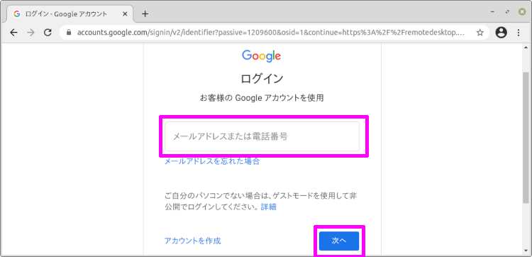
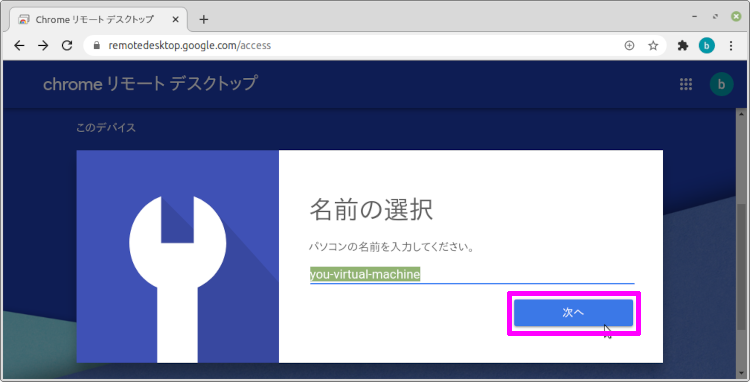
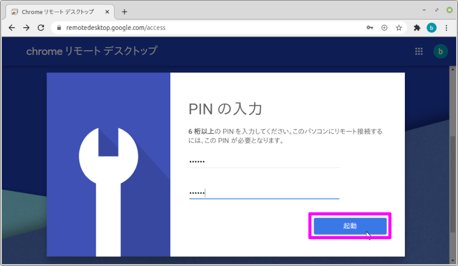

Chrome リモート デスクトップ を使って Linux Mint に接続する個人的メモです。
前提
- Linux Mint をインストール済みであること。
Chrome ブラウザ をインストール する
Linux Mint で Chromeブラウザダウンロードページ を開いて「Chrome をダウンロード」ボタンを押下。
「64 ビット .deb (Debian/Ubuntu 用)」にチェックを入れて「同意してインストール」ボタンを押下。
「GDebi パッケージインストーラー」を選んだ状態で「OK」ボタンを押下。
Google Chrome の「パッケージをインストール」ボタンを押下。
ユーザのパスワードを入れて「認証する」ボタンを押下。
追加ソフトウェアのインストールが必要な場合があります。その場合は「続行」ボタンを押下。
こんな画面が出れば、Google Chrome のインストール完了。
起動方法は、左下のメニューから「全てのアプリケーション > インターネット > Google Chrome」の順番に選択して、起動させる事が出来ます。
初回起動時「Google Chrome を既定のブラウザにする」にチェックを入れて「OK」ボタンを押下。

Chrome リモート デスクトップ をインストール する
続いて Chrome の リモート デスクトップ をインストールします。
先程インストールした Chrome で「https://remotedesktop.google.com/」を開く。
「リモート アクセス」をクリック。
Google にログインしていない場合はログインをする。

ログイン後、リモートアクセスの設定から ダウンロードボタンを押して、Chrome リモート デスクトップ をダウンロードする。
Chrome リモート デスクトップ ツールのダウンロード中に、Chrome ウェブストア の 拡張機能「Chrome Remote Desktop」が表示されるので「Chrome に追加」ボタンを押下。
権限の確認が出るので「拡張機能を追加」ボタンを押下。

拡張機能「Chrome Remote Desktop」のインストールが終わったら元の画面に戻り、
「リモートアクセスの設定」のボタンが変わっているので「同意してインストール」ボタンを押下。
「ダウンロードしたファイルを開く」か確認が出るので「はい」ボタンを押下。
Google Chrome Remote Desktop の「パッケージをインストール」ボタンを押下。
ユーザのパスワードを入れて「認証する」ボタンを押下。
追加ソフトウェアのインストールが必要な場合があります。その場合は「続行」ボタンを押下。
こんな画面が出れば、Google Chrome Remote Desktop のインストール完了。
元のブラウザに戻って、表示用の名前を入力して、

リモート接続時に入力する PIN を入力して、

ユーザのパスワードを入れて「認証する」ボタンを押下して、
こんな画面になれば完了。
Windows や タブレットから リモート接続することが出来るようになりました。
Chrome リモート デスクトップ の設定を変更する
このままでもいいのですが、少し設定を変えると使い勝手が格段に向上します。
今のままでリモート接続をすると、新規に仮想デスクトップが立ち上がってしまいます。
こんな感じで リモート接続をすると、まっさらになってしまいます。
なので、少し設定を変えてあげます。
Chrome Remote Desktop を停止させる
修正する前に、Chrome Remote Desktop を停止させます。
ターミナルに下記コマンドを入力すると Chrome Remote Desktop を停止させることが出来ます。
1 | $ /opt/google/chrome-remote-desktop/chrome-remote-desktop --stop |
chrome-remote-desktop ファイルを修正する
ファイルマネージャから「ファイルシステム > opt > google > chrome-remote-desktop」のディレクトリまで移動して、
ファイル > Open as Administrator を選択して、ファイルマネージャを管理者権限に変更します。
管理者権限にしないと、ファイルを編集することが出来ないのです。
警告画面が出るので「OK」ボタンを押下して,
ユーザのパスワードを入れて「認証する」ボタンを押下すると、
管理者権限のファイルマネージャが開きます。
ファイルマネージャ に管理者権限があると「スーパーユーザ」と表示されます。
「chrome-remote-desktop」ファイルを選択して、右クリックから「開く」を押下。
「表示する」を押下して、テキストエディタで開きます。
108行目
「chrome-remote-desktop」ファイルを3箇所修正して行きます。
1 | FIRST_X_DISPLAY_NUMBER = 20 |
451、452行目
1 | while os.path.exists(X_LOCK_FILE_TEMPLATE % display): |
750、751行目
1 | def launch_session(self, x_args): |
3箇所の修正が終わったら、保存をして完了。
Chrome Remote Desktop を起動させる
再度 Chrome Remote Desktop を起動させます。
1 | $ /opt/google/chrome-remote-desktop/chrome-remote-desktop --start |
これで、リモート接続をしても新規の仮想デスクトップは立ち上がらずに、今ログインしているユーザを引き継ぐことが出来ます。